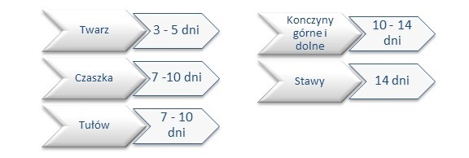

Usuwanie szwów
Czas usuwania szwów uzależniamy od wielu czynników. Są to:

Znaki po szwach są najmniej widoczne, gdy szwy zostaną szybko usunięte. Natomiast ryzyko rozejścia się brzegów rany zależy od okresu pozostawienia szwów. Przy zbyt szybkim usunięciu, bezpośredni, drobny uraz może doprowadzić do rozejścia się rany. Proces dojrzewania rany trwa około trzech miesięcy po zabiegu usuwania. Dlatego długość pozostawienia szwów jest wyborem pomiędzy naturalnym gojeniem się rany, a pożądanym rezultatem kosmetycznym.
Co będzie nam potrzebne do zabiegu?
• Nożyczki/skalpel
• Pinceta
Etapy postępowania: